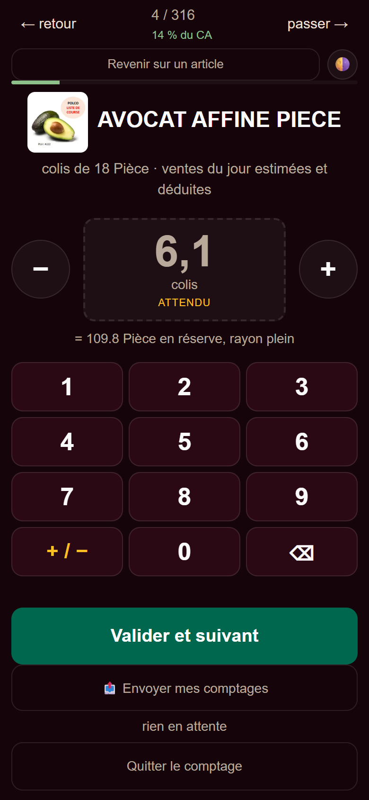
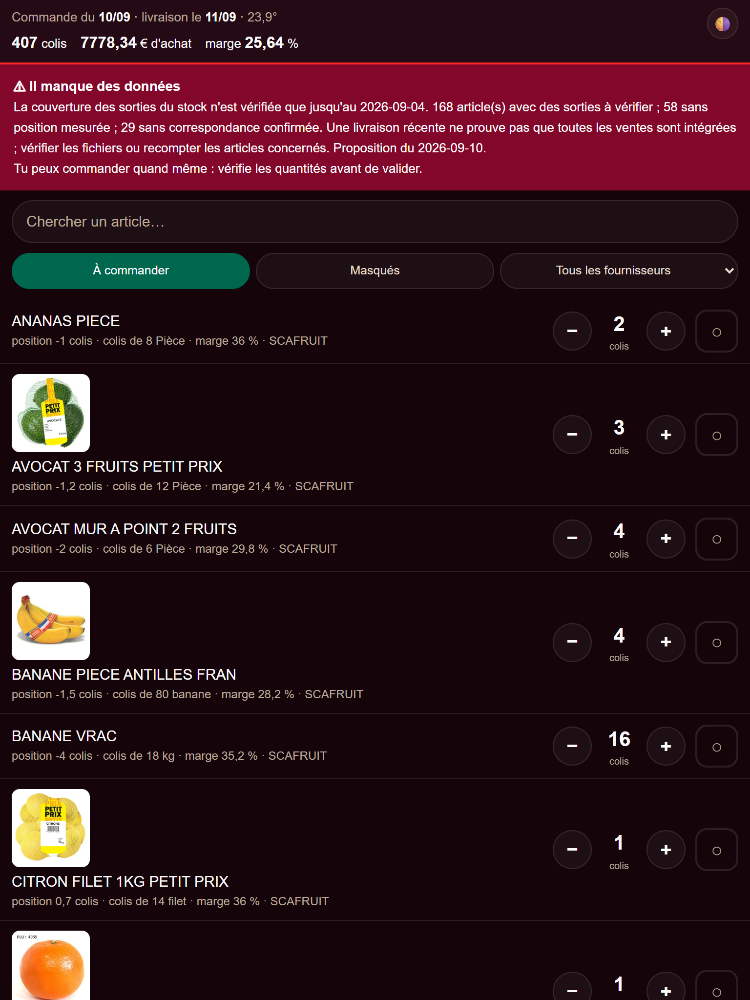

Audit et corrections de l’application
Situation vérifiée le 9 septembre 2026. Derniers parcours navigateur terminés à 18 h 21, heure locale du PC.
Rapport technique interne. Les résultats ci-dessous sont des observations datées, pas une garantie permanente de disponibilité ou de réception des courriels.
1. Résultat opérationnel
L’application corrigée est en service sur son adresse Tailscale habituelle. L’écoute locale a été relue : 127.0.0.1:8751, processus 12180 lors du dernier contrôle. Le contrôle HTTP final retourne 200.
- Le tri demandé reste fruits non bio, légumes non bio, puis bio, dans l’ordre Webtelevente à l’intérieur de chaque groupe. Aucun nouveau sous-groupe n’a été ajouté.
- Les quantités de test ont été exercées dans une copie séparée. Le parcours final vérifie un comptage conservé hors ligne, son envoi, puis deux corrections successives, suivies d’un recalcul réel.
- La proposition de production a été reconstruite par le moteur. Aucun calcul n’est en échec dans le dernier constat de fraîcheur.
2. Rôles et documents des agents
AGENT.md, les fiches de rôle, les procédures et le contrat de données ont été harmonisés autour de responsabilités séparées :
| Rôle | Responsabilité explicitée |
|---|---|
| Hermes / orchestration | Coordonner, garder les conclusions justifiées et ne pas confondre compte rendu technique et résultat métier. |
| Agent courrier | Qualifier les pièces reçues, préserver les originaux, demander le traitement approprié et restituer le classeur dans le fil d’origine. |
| Agent données | Valider, importer sans réécrire les carnets, produire les dérivés et publier les points non résolus. |
| Agent tendances | Proposer des ajustements dans les droits et plafonds prévus, sans se substituer au responsable. |
| Agent contrôle | Relire indépendamment les preuves, les droits, les refus et les résultats ; ne pas déclarer un envoi reçu sur une seule acceptation SMTP. |
| Agent rayon / responsable | Prendre les décisions opérationnelles avec motif, date et traçabilité ; contrôler les quantités avant commande. |
Les procédures distinguent désormais clairement stock recompté et statistiques de ventes, casse/dons facultatifs, PV magasin vérifié et prix catalogue, réception d’un mail et intégration effective de ses pièces, arrêt de maintenance et panne.
AGENTS.md n’a pas été modifié : sa modification a été bloquée par une validation de l’outil restée sans réponse. Aucun contournement n’a été tenté. Il reste un document ancien non harmonisé ; HERMES.md renvoie à AGENT.md, utilisé comme texte canonique.3. Corrections vérifiées
| Domaine | Correction et vérification |
|---|---|
| Historique et stock | Lecteur commun idempotent, conflits métier refusés, corrections de comptage rejouées sur leur origine et leur heure de mesure. Les 321 doublons historiques sont signalés et ne sont plus additionnés deux fois ; aucune ligne historique n’a été supprimée. |
| Imports et dérivés | Dates civiles et quantités finies contrôlées ; absence de colisage non devinée ; simulation sans publication ; JSON dérivés remplacés atomiquement. Un échec amont arrête la chaîne et conserve la dernière proposition disponible. |
| Courrier | Une pièce déjà rangée ne signifie plus « traitement fini ». Reprise après interruption, vérification des archives et refus d’un index tronqué ; les imports rejoués ne redoublent pas les faits. |
| Factures et marge | Préparation du classeur avant publication des faits, empreintes durables, réparation idempotente d’une publication partielle, PV et provenance conservés. Mapping réservé aux noms attestés TerreAzur/Pomona. Comparaison du montant en décimal : ±0,01 € accepté, dépassement refusé. |
| Droits et annulations | Exécutant explicite, refus des retraits non autorisés et des annulations conflictuelles, décisions futures filtrées, numéros d’action réservés durablement. Quantités NaN/infinies refusées ; plafond contrôlé pour la date de commande cible. |
| Serveur | Liste de fichiers publics commune à GET/HEAD ; refus des chemins privés et variantes Windows ; validation complète des lots avant écriture. Recalculs concurrents conservés, déconnexion du téléphone sans perte du travail déjà accepté. |
| Disponibilité Tailscale | Rafales de connexions reproduites : seulement cinq restaient initialement en attente. File d’attente portée à 128 sur la classe du serveur. Après redémarrage : 360 requêtes HTTPS réussies, y compris pendant le contrôle navigateur. |
| Interface | Stock inconnu laissé vide plutôt que présenté comme zéro ; erreurs de stockage signalées ; comptages/messages ajoutés pendant un envoi conservés ; texte externe échappé ; détails de calcul pris dans les résultats du moteur. Pages adaptées aux petits écrans. |
| Lanceurs | Identification du script et du processus avant arrêt ; aucun arrêt global de Python. Arrêt explicite persistant, watchdog unique et refus de tuer un service étranger utilisant le port. |
4. Photos des produits
Les quatre mails identifiés contenaient 91 photos. Les originaux et leur provenance sont conservés dans documents-partages/photos-produits/. Le générateur vérifie leurs empreintes et produit deux variantes WebP sans métadonnées mail.
76 associations exactes sont affichées dans le comptage, la liste de commande et le détail. 15 photos restent sans association publiée : elles ne sont pas affectées par approximation à un article. Les 152 fichiers correspondant aux articles publiés ont été relus par HTTP, avec comparaison des empreintes. Le rapport détaillé des associations se trouve dans documents-partages/photos-produits/rapport-correspondances.json.


5. Pourquoi l’avertissement sur le 4 et le 10 septembre ?
Le 4 septembre correspond à la limite des mouvements/statistiques exploitables pour une partie de la couverture du rayon. Cela ne signifie pas que les recomptages plus récents ont disparu. Le moteur les conserve et raisonne article par article ; une livraison récente ne suffit pas non plus à certifier que toutes les sorties du rayon sont intégrées.
Le constat reconstruit indique 168 articles avec des sorties à vérifier, 58 sans position mesurée et 29 sans correspondance confirmée. Ce sont des limitations de données à distinguer d’une panne technique. L’absence de casse ou de dons n’est pas considérée comme une anomalie obligatoire.
La proposition du 10 septembre est la prochaine commande au moment du contrôle final, après la limite de 9 h 30 du 9 septembre. Un défaut distinct, qui pouvait considérer à tort une livraison matinale comme la clôture d’une journée et avancer trop tôt la commande, a également été corrigé et testé.
6. Mail Pomona : cause établie et limite de preuve
Le journal du 9 septembre à 6 h 29 min 28 s indique Skipping MEDIA: file not found sur le chemin du classeur contenant /C:/ et des espaces encodés en %20. Le journal indique ensuite l’envoi de la réponse texte ; le classeur a été écarté. Cela explique l’absence de cette pièce jointe ce matin, sans constituer une preuve de réception du texte dans la boîte finale.
Le test local de l’adaptateur installé accepte le chemin Windows natif avec espaces littéraux ; il refuse le slash avant la lettre du lecteur et la forme encodée utilisée ce matin. Les procédures du courrier et du classeur ont été corrigées en conséquence.
Aucun mail Pomona n’a été renvoyé. Aucun succès de réception future n’est revendiqué. Le prochain envoi devra être vérifié sur le message et la pièce réellement reçus, pas uniquement sur une directive MEDIA ou une acceptation SMTP.
7. Intégrité et incident de test
Les trois carnets de faits de production sont inchangés octet pour octet par rapport au relevé d’intégrité de cette passe. Le préfixe des 21 journaux présents à ce relevé est conservé ; seules des traces opérationnelles ont été ajoutées à certains journaux lors du recalcul de production. Les contrôles navigateur finaux confirment aussi qu’ils n’ont pas modifié les journaux de production.
8. Preuves et reproduction
- Suite protégée : 229 tests, zéro échec. Le garde-fou Python n’est pas une sandbox système ; les sous-processus disposent de leurs propres racines de test.
- Recette isolée : cinq pages en 320, 360, 768 et 1024 pixels ; quatre scénarios métier, dont le recalcul de corrections successives.
- Recette de production Tailscale : 20 vues, HTTP 200, aucune erreur JavaScript/console ni débordement horizontal ; lecture seule.
- Charge HTTPS : trois séries de 120 réponses HTTP 200 après correction.
- Publication des images, intégrité des carnets, comparaison du classeur et test du chemin de pièce jointe.
- Inventaire syntaxique avant archivage du présent dossier : 79 fichiers Python, 25 JSON et 22 JSONL validés ; 140 672 lignes JSONL analysées. Aucun échec de parsing.
pip checkne signale aucune dépendance cassée.
9. Ce qui reste explicitement non garanti
- Pas de test sur le téléphone Android physique : contrôles effectués dans Edge avec formats téléphone/tablette et sur l’adresse Tailscale réelle depuis ce PC.
- Pas de commande commerciale envoyée, pas de nouveau mail Pomona, pas d’appel réel au modèle Hermes pour répondre à un message de test. La réception HTTP du message a été vérifiée, pas une réponse complète du modèle.
- Les droits par rôle sont des garde-fous coopératifs, pas une authentification individuelle des employés. L’accès réseau repose encore sur le périmètre Tailscale.
- Les écritures multi-fichiers sont récupérables dans les cas testés, mais ne forment pas une transaction globale. Une corruption historique ou une provenance ambiguë nécessite une reprise contrôlée.
- Les 15 associations photo non confirmées, les articles sans mesure/correspondance et les données de sorties manquantes restent à qualifier avec des sources réelles.
AGENTS.mdreste non harmonisé. Certains outils de maintenance ont encore un contrôle de rôle incomplet ; ne pas étendre leurs droits implicites. La note du matin peut décrire une période de données ancienne : toujours lire sa date.- Aucun redémarrage complet de Windows ni test d’exploitation sur plusieurs jours n’a été effectué. Le refus de redémarrer aveuglément un serveur bloqué est intentionnel.
- Pas de dépôt Git présent : aucun commit ni retour arrière fondé sur Git n’a été possible ou revendiqué.